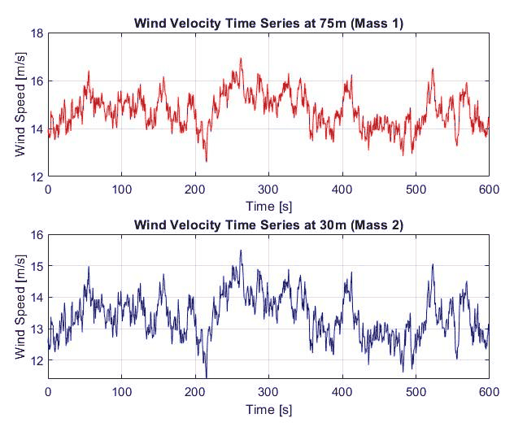
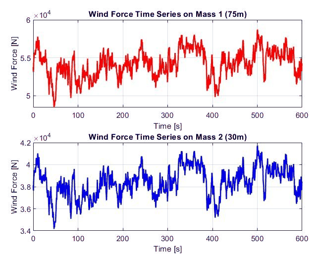
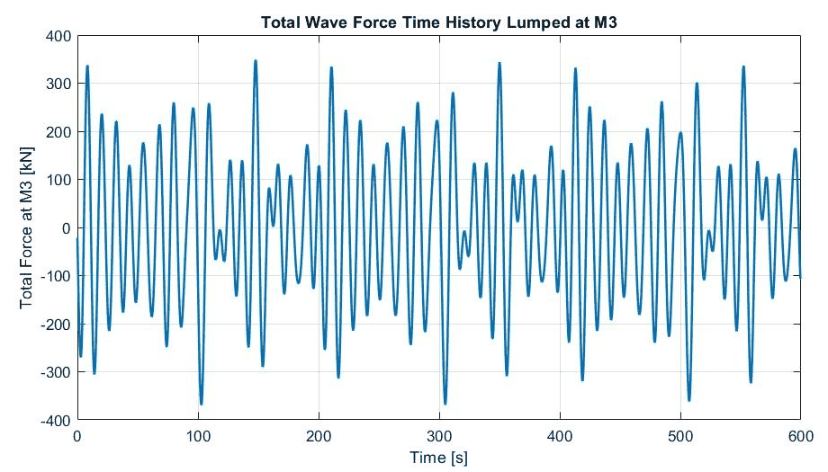

Dynamic analysis of an offshore platform under wind and wave loading
For my offshore structures class I analyzed a fixed jacket platform in 50 m of water under random wind and waves. The platform was given as a three-mass model, so most of the work was generating the loads and solving the dynamics. I wrote all of it in MATLAB.
For the wind, I used a log profile with 15 m/s at 90 m and generated turbulence from the Kaimal spectrum. For the waves, I generated an irregular sea from the JONSWAP spectrum with a 6 m significant wave height and a 12 s peak period. I got the water particle velocity and acceleration from linear wave theory and computed the forces on the legs and braces with the Morison equation.

Then I set up the equations of motion, did a modal analysis (natural frequencies of 1.88, 5.58 and 9.82 rad/s), and solved the response with the Newmark-beta method in modal coordinates. Over the 600 s record, the wave force at the lowest mass went up to about 350 kN, and the top of the platform moved about 6 mm at most.

Other figures






